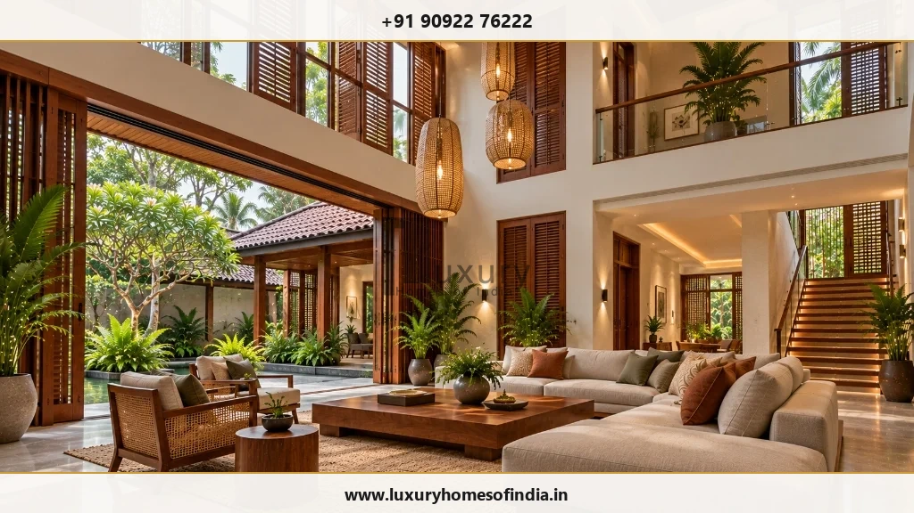
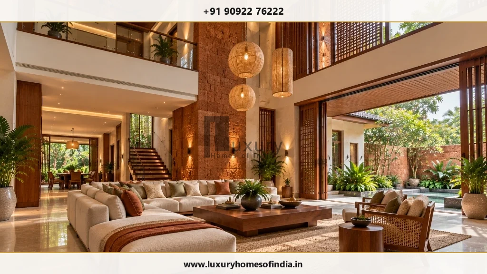
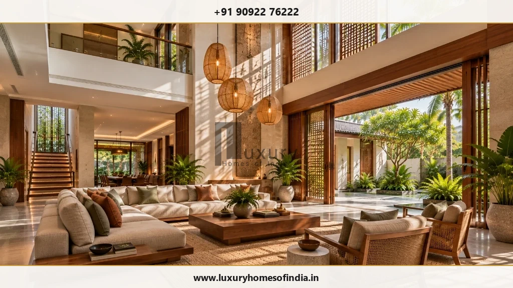
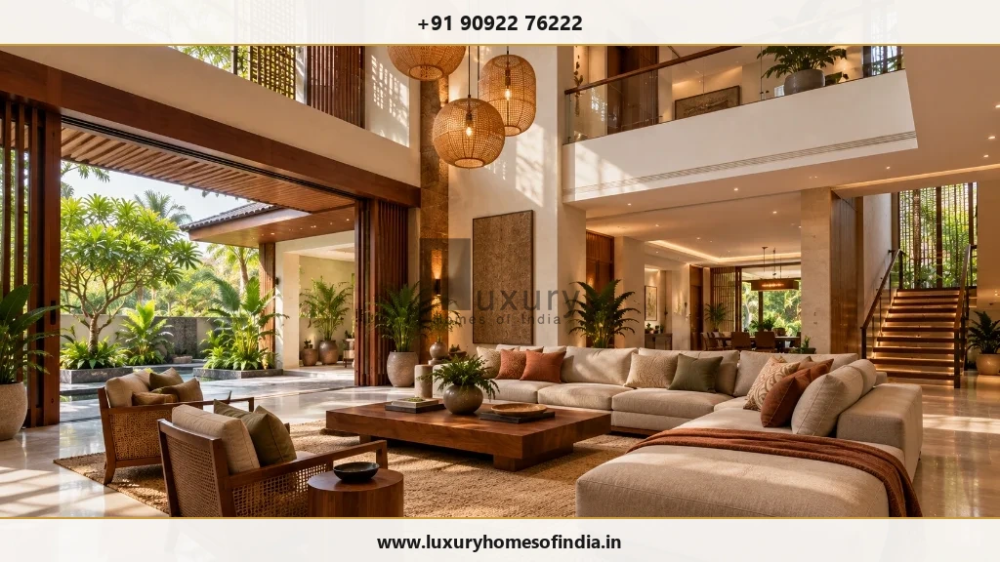

Double Height Living Room Design in Chennai
Create a sense of openness—with the details that make it comfortable.
Key Takeaways: Double Height Living Rooms
- Volumetric Proportions Over Pure Height: A double-height space (18 to 22 ft clear volume) must balance floor area width and depth; an overly narrow floor plan with high ceilings creates a disorienting chimney effect.
- Chennai Tropical Solar Management: Double-height glass facades require north orientation, double-glazed Low-E glass, deep exterior overhangs, and timber louvers to prevent tropical heat gain.
- HVAC & Air Distribution Engineering: Warm air naturally rises (stack effect). Cooling a double-height volume requires low-level supply diffusers, high-level return ducts, and discrete destratification ceiling fans.
- Acoustic Reverberation Control: High vertical volumes amplify echoes. Soft furnishings, textured lime plaster, acoustic ceiling baffles, and timber wall cladding prevent sound travel to upper bedrooms.
- Maintenance by Design: High-level glazing, motorized blackout blinds, and suspended light fixtures must be engineered with accessible servicing strategies, such as motorized winch pendants.
A double-height living room can lend a distinctive architectural character to a luxury home. By opening the living space vertically across two floor levels, it unlocks abundant natural daylight, grand architectural expression, and sweeping visual connections between ground floor family spaces and upper mezzanine galleries.
However, extra ceiling height alone does not guarantee a better living environment. Room proportions, furniture scale, multi-level lighting, acoustic absorption, air-conditioning volume, and long-term maintenance must be engineered as a cohesive whole. A double-height room should feel warm, intimate, and comfortable during daily family use—not merely impressive in an architectural photograph.
If you are planning a double height living room design in Chennai, begin with your family's daily lifestyle requirements and the practical technical systems behind them. At Luxury Homes of India, our comprehensive luxury home planning approach aligns your architectural floor plan with structural slab cutouts and interior execution.

What is a double-height living room?
A double-height living room extends vertically through the floor space that would ordinarily accommodate two ceiling height levels (typically reaching between 18 and 22 feet clear clearance). It can connect visually with an upper mezzanine landing, bridge corridor, or floating staircase, creating a dramatic central focal point for the residence.
There is no standard ceiling height that suits every villa. The appropriate vertical dimension depends on the overall building massing, structural engineering design, and local development controls under CMDA planning guidelines.
Before including a double-height volume in your architectural brief, evaluate how it impacts:
- Upper-Floor Square Footage: Sacrificing first-floor floor area for a vertical void.
- Room Proportions: Maintaining visual balance between horizontal room width and vertical clearance.
- Privacy Between Levels: Sound and sightline separation between ground floor living and upper bedrooms.
- Daylight & Glare: Managing intense Chennai sunlight across high-level windows.
- Lighting & Acoustics: Illumination at human scale and reverberation control.
- Cooling & Energy Efficiency: Air conditioning volume and stack effect thermal dynamics.
- Cleaning & Maintenance: High-reach window washing, bulb replacements, and drapery operation.

Start with the purpose of the space
A double-height living room should actively support your family's daily living patterns:
A Welcoming Family Space
Position seating arrangements, accent tables, and ambient floor lighting around intimate conversation zones. The lower 8 to 10 feet of the room must feel cozy and inviting when only two or three family members are relaxing together.
A Formal Entertaining Area
Plan circulation paths, furniture layouts, and spatial transitions between the living room, formal dining room, and adjacent outdoor courtyard spaces to accommodate large guest gatherings comfortably.
A Connection Between Levels
An upper gallery walkway or cantilevered mezzanine encourages visual interaction across floors. However, open bridge walkways can compromise acoustic privacy for adjoining upper-floor bedrooms—a trade-off that requires careful architectural planning.
A View Towards the Outdoors
Tall double-height glass openings frame panoramic views of private landscaped gardens or water features. Glazing specifications, exterior shading, and neighbour privacy louvers must be coordinated alongside the view.
Balance height with the room's proportions
A tall room can feel grand and inspiring—or cold and awkward—depending on its floor plan proportions. A small 12x12 foot room with a 20-foot ceiling feels like an uncomfortable vertical shaft. Conversely, an expansive 30x25 foot living room benefits immensely from double-height clearance.
Key volumetric balance factors:
- Horizontal Scale: Ensure floor area width and depth match the vertical clearance.
- Wall Articulation: Divide high vertical walls into distinct horizontal bands using timber panelling, stone cladding, or art niches.
- Furniture Proportion: Select low-profile, generous sectional sofas and substantial coffee tables that anchor the ground plane.
- Architectural Focal Points: Incorporate full-height chimney stacks, textured laterite stone walls, or vertical wooden fins to ground the height.
Daylight without sacrificing comfort in Chennai
High-level windows draw natural sunlight deep into the interior footprint. However, in Chennai's hot tropical climate, unshaded double-height glass facades cause severe solar heat gain and harsh glare.
Sun-conscious architectural solutions for Chennai:
- Building Orientation: Position primary double-height glazing toward the north or northeast to capture soft, indirect daylight without direct afternoon sun.
- Deep Exterior Overhangs & Verandahs: Projecting roof eaves, pergola trellises, and balcony overhangs shield high glass from steep tropical sun angles.
- High-Performance Glazing: Specify double-glazed units (DGU) with Low-Emissivity (Low-E) coatings and spectrally selective tinting to block infrared heat radiation.
- Automated High-Reach Shading: Install motorized blackout roller shades or vertical timber jaali screens controlled via smart home automation.

Lighting at the right scale
A single decorative chandelier suspended from a 20-foot ceiling cannot illuminate a double-height room effectively. A successful lighting scheme layers light across three distinct vertical zones:
- Lower Zone (Ground to 8 ft): Floor lamps, table lamps, and low-level wall sconces provide warm, glare-free task lighting for seating areas.
- Mid-Level Zone (8 to 14 ft): Architectural wall sconces, artwork spotlighting, and mezzanine step lighting visually bridge the ground floor and ceiling.
- Upper Zone (14 to 20 ft): Concealed ceiling cove LEDs, directional narrow-beam downlights, and suspended feature pendants highlight architectural volume.
Always ensure suspended light fixtures are fitted with motorized winch lifters or accessible maintenance hatches so bulb replacement does not require dangerous scaffolding.

Consider sound and privacy
Large vertical volumes act as acoustic resonators. Hard flooring (marble or granite) and tall smooth walls cause sound waves to bounce continuously, resulting in harsh echoes and poor speech clarity.
Acoustic mitigation strategies:
- Absorptive Wall Treatments: Integrate acoustic timber louvers backed with acoustic insulation, upholstered wall panels, or natural lime plaster finishes.
- Floor Coverings: Place large high-density wool area rugs beneath seating clusters to absorb footfall noise.
- Upper Gallery Acoustical Glass: Install frameless acoustic glass partitions along upper floor corridors to prevent television and conversation noise from disrupting sleeping quarters.
Coordinate cooling and ventilation early
Thermodynamics dictate that warm air rises while cool air settles at floor level (thermal stratification). In an enclosed double-height living room, standard wall-mounted split AC units will struggle, running continuously while failing to cool the occupied ground zone.
Building services (MEP) recommendations:
- Low-Level Supply Diffusers: Deliver conditioned air directly into the human living zone (below 8 feet) via discreet linear slot diffusers.
- High-Level Return Ducts: Extract hot air accumulating near the high ceiling via dedicated return ducts equipped with motorized exhaust dampers.
- Quiet Destratification Fans: Use low-speed, large-diameter ceiling fans to gently circulate air and balance temperature gradients without creating wind drafts.
Interiors that bring the room together
A double-height living room does not require heavy ornamentation on every square foot of wall space. Rather, refined material selection and continuous vertical lines unify the volume.
| Interior Element | Key Planning & Design Considerations |
|---|---|
| Seating Layout | Choose generous, low-slung sectional sofas with modular ottomans to anchor the ground plane without blocking sightlines. |
| Feature Accent Wall | Extend a single material (book-matched marble, fluted teakwood, or laterite stone) vertically to emphasize ceiling height. |
| Window Treatments | Specify motorized dual-roller shades (sheer solar screen + blackout fabric) operated via smart remote or home automation. |
| Material Palette | Blend warm natural materials—teakwood, cane, honed granites, and warm plaster—to offset the potential coldness of large volumes. |
| Layered Lighting | Separate circuits for ambient cove lighting, accent wall washers, seating task lights, and suspended pendant clusters. |
| Mezzanine Railings | Use slim toughened glass balustrades or slender steel spindles to maintain visual transparency between levels. |
Make maintenance part of the design
High-level architectural features become a liability if they cannot be cleaned or serviced safely. Integrate maintenance access into your floor plan from day one:
- Confirm access methods for cleaning upper window panes (exterior walkways or interior telescopic poles).
- Install motorized chandelier winches that lower heavy light fixtures to floor level for easy cleaning and bulb changes.
- Ensure HVAC filters and motorized blind motors are located near accessible service access panels.
Architecture and engineering working together
Creating a double-height volume requires removing a significant portion of a first-floor concrete floor slab. This structural cut-out alters the lateral stiffness of the building frame, requiring specialized reinforced concrete (RCC) beam design and column strengthening.
At Luxury Homes of India, our integrated structural engineering team coordinates slab cut-outs, floating staircases, and cantilevered upper galleries directly with architectural plans to ensure complete safety and statutory compliance.
Frequently Asked Questions
Design openness that works for everyday life
A successful double-height living room is defined by how the volume works with the rest of your home. Speak with Luxury Homes of India to plan your living room layout, architectural expression, and structural engineering in Chennai.